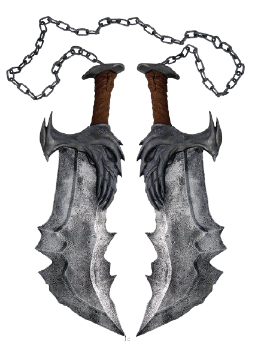
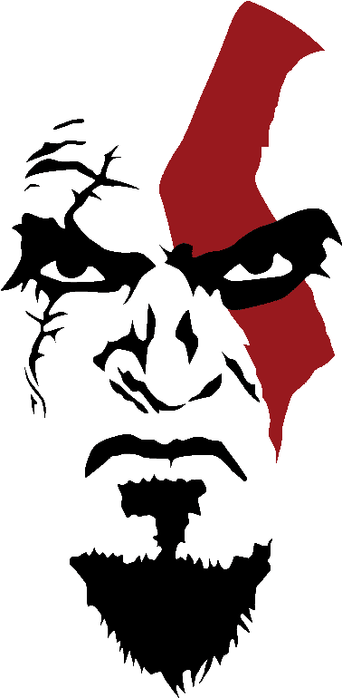

Laminas do caos

As Lâminas do Caos são um par de lâminas presas a correntes criadas pelo Deus da Guerra, Ares. Ares mandou fazer as lâminas para dá-las a um servo que se provasse digno de seu serviço. Essas lâminas foram o primeiro par de lâminas com correntes que Kratos usou na série God of War.
Tatuagens do Personagem

A enorme tatuagem vermelha que Kratos tem (e que era azul nos primeiros projetos do jogo) é relacionada ao seu irmão, Deimos. Ele tinha uma marca de nascença com desenho semelhante a esse, e Kratos fez um tributo a ele após a sua morte.